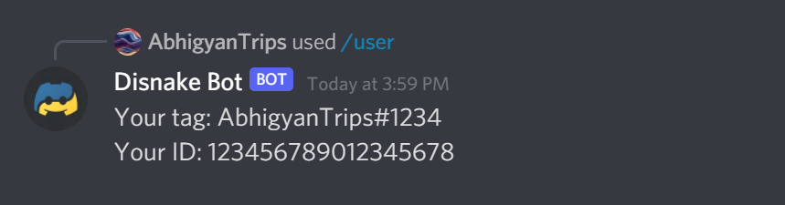

Creating commands¶
Note
This page is a follow-up, and the base code used is from the previous page (Initial files). The code can be found on the GitHub repository here.
Discord also allows developers to register slash commands, which provides users a first-class way of interacting directly with your application. These slash commands shall be covered by the guide here, in the Interactions section.
A note on prefix commands¶
Bot commands that are initiated when a keyword is used along with a specified prefix (such as ! or $) are known as prefix commands (are also often referred to as text commands).
Message Intent - Privileged
It is to be noted that handling prefix commands requires the message intent, which allows the bot to get content and data of messages sent by users. This intent has recently been privileged, i.e., it needs to be manually enabled for the bot application, and its requirement will be reviewed if you eventually apply for your bot's verification.
You can read more about the message intent here.
Therefore, to minimize the permissions your bot has to use, we will be convering prefix commands under the Popular Topics section, and advancing with the basics of slash commands in this article; more advanced topics will be covered in the Interactions section.
Registering commands¶
This section covers the bare minimum to get you started with registering slash commands. Once again, you can refer to this page for an in-depth coverage of topics, including guild commands, global commands, options, option types, autocomplete and choices.
Now, we shall continue with the base code used in the previous section.
main.py | |
|---|---|
1 2 3 4 5 6 7 8 9 10 11 12 | |
The first step is to use the @bot.slash_command coroutine, along with an async function in order to define the code for your slash command. Below is a script demonstrating the same (focus on the use of inter, which is short for interaction).
main.py | |
|---|---|
1 2 3 4 5 6 7 8 9 10 11 12 13 14 15 16 17 | |
The inter passed into the function is analogous to context, or ctx used in prefix commands - it passes through all information relative to the interaction - data regarding the user who initiated the command, as an example. It is also necessary for replying to the use of the command.
Using ctx vs. inter
If you have experience with coding bots with discord.py, you would be familiar with using ctx as an abbreviation for passing context into the function. This guide will primarily be using inter, as it is short for interaction and refers to disnake.ApplicationCommandInteraction(). Of course, you're open to using your preferred abbreviation in code.
Registering commands in specific guilds¶
Note that servers are referred to as "guilds" in the Discord API and disnake library. On running the above code, the slash command will be registered globally, and will be accessible on all servers the bot is in. The caveat being that global registration of slash commands can take up to 1 hour (refer to Discord's documentation).
When you're trying to test your changes to code in real time, it can be immensely useful to have the command's function update with your code changes right away. Thus, you can use the guild_ids argument for the command to be instantaneously registered in a list of specified servers. (We recommend including your separate development server in this list.)
main.py | |
|---|---|
1 2 3 4 5 6 7 8 9 10 11 12 13 14 15 16 17 | |
Using test_guilds in commands.Bot()
When you have multiple commands registered under the same test guilds, it is convenient to only have your guild_ids defined once. Therefore, you can use the test_guilds argument in the commands.Bot() instance instead of passing guild_ids to every single command -
bot = commands.Bot(test_guilds=[1234, 5678])
Now that you're all set with registering the slash command, you can proceed with responding to the initiated command.
Responding to commands¶
You can respond to a slash command initiated by the user, using inter.response.send_message(). It is analogous to using ctx.send(), in that you can respond to the interaction with embeds, files, buttons/select menus or just plain text.
main.py | |
|---|---|
1 2 3 4 5 6 7 8 9 10 11 12 13 14 15 16 17 | |
Server info command¶
inter.guild refers to the guild the interaction was sent in (a Guild instance), which exposes properties such as .name or .member_count.
main.py | |
|---|---|
1 2 3 4 5 6 7 8 9 10 11 12 13 14 15 16 17 18 19 | |
Tip
Refer to the Guild documentation for a list of all the available properties and methods.
You could also display the date the server was created, or the server's verification level. You would do those in the same manner - use inter.guild.created_at or inter.guild.verification_level, respectively.
User info command¶
A "user" refers to a Discord user. inter.author refers to the user the interaction was sent by (a User instance in DM contexts, or a Member instance in server contexts), which exposes properties such as .name or .id. (Using just inter.author will give the user's full tag.)
main.py | |
|---|---|
1 2 3 4 5 6 7 8 9 10 11 12 13 14 15 16 17 | |

Tip
Refer to the User and Member documentation for a list of all the available properties and methods.
And there you have it!
Resulting Code¶
If you want to compare your code to the code we've constructed so far, you can review it over on the GitHub repository here.